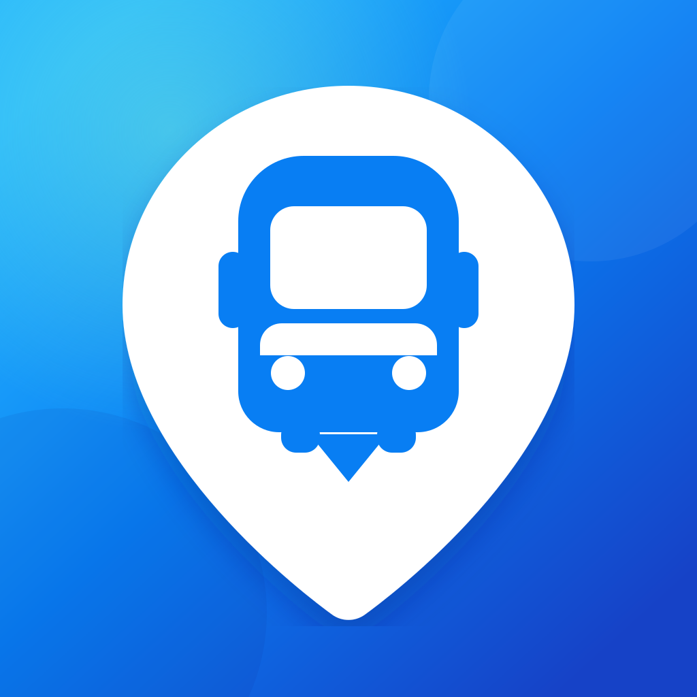

How can we help?
If Bussi is not showing a stop, departure, widget update or live vehicle, report the issue with the stop name, route number, iOS version and a screenshot.
Report an issue on GitHub ↗
BussiLive departures, nearby stops, widgets and vehicle tracking for public transport across Finland.
If Bussi is not showing a stop, departure, widget update or live vehicle, report the issue with the stop name, route number, iOS version and a screenshot.
Report an issue on GitHub ↗Allow location access in iPhone Settings › Privacy & Security › Location Services › Bussi. Bussi uses location to find the closest stop or favorite.
Widget refresh timing is managed by iOS. Open Bussi after changing favorites, then keep Background App Refresh and Location Services enabled for the best results.
Vehicle position is shown only when the transport operator publishes live data. The route remains visible when a vehicle position is unavailable.
Last updated: September 13, 2026
Bussi does not require an account and does not include advertising or third-party analytics. The developer does not operate a server that stores your personal information.
With your permission, Bussi uses your location to find nearby stops and select the closest favorite for widgets. Recent location, favorite stops and departure snapshots may be stored locally on your device and in Bussi's App Group so the app and widget can work together. Bussi does not use continuous precise background tracking.
Bussi requests stop, route, departure and vehicle information from Digitransit. When you search for nearby stops, coordinates are included in the request to Digitransit. Route maps are displayed with Apple Maps. These services may process technical information under their own privacy policies.
You can deny or revoke location access at any time in iPhone Settings. You can remove favorites inside Bussi, and uninstalling the app removes its locally stored app data according to iOS behavior.
For privacy or support questions, contact the developer through GitHub.